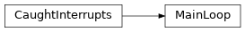
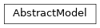

emloop¶
emloop core module.
Functions¶
create_output_dir(): Create output_dir under the givenoutput_rootandcreate_dataset(): Create a dataset object according to the given config.create_model(): Create a model object either from scratch or from the checkpoint specified byrestore_from.create_hooks(): Create hooks specified inconfig['hooks']list.create_main_loop(): CreatesMainLoopwith model, dataset and hooks according to config.
-
emloop.create_output_dir(config, output_root, default_model_name='Unnamed')[source]¶ - Create output_dir under the given
output_rootand - dump the given config to YAML file under this dir
- register a file logger logging to a file under this dir
Parameters: Return type: Returns: path to the created output_dir
- Create output_dir under the given
-
emloop.create_dataset(config, output_dir=None)[source]¶ Create a dataset object according to the given config.
Dataset config section and the output_dir are passed to the constructor in a single YAML-encoded string.
Parameters: Return type: Returns: dataset object
-
emloop.create_model(config, output_dir=None, dataset=None, restore_from=None)[source]¶ Create a model object either from scratch or from the checkpoint specified by
restore_from.Emloop allows the following scenarios
- Create model: leave
restore_from=Noneand specifyclass; - Restore model: specify
restore_fromwhich is a backend-specific path to (a directory with) the saved model.
Parameters: - config (
dict) – config dict with model config - output_dir (
Optional[str]) – path to the training output dir - dataset (
Optional[AbstractDataset]) – dataset object implementing theemloop.datasets.AbstractDatasetconcept - restore_from (
Optional[str]) – from whence the model should be restored (backend-specific information)
Return type: Returns: model object
- Create model: leave
-
emloop.create_hooks(config, model=None, dataset=None, output_dir=None)[source]¶ Create hooks specified in
config['hooks']list.Hook config entries may be one of the following types:
A hook with default args specified only by its name as a string; e.g.¶hooks: - LogVariables - emloop_tensorflow.WriteTensorBoard
A hook with custom args as a dict name -> args; e.g.¶hooks: - StopAfter: n_epochs: 10
Parameters: - config (
dict) – config dict - model (
Optional[AbstractModel]) – model object to be passed to the hooks - dataset (
Optional[AbstractDataset]) – dataset object to be passed to hooks - output_dir (
Optional[str]) – training output dir available to the hooks
Return type: Returns: list of hook objects
- config (
Classes¶
MainLoop: emloop main loop for training and model inference.AbstractDataset: This concept prescribes the API that is required from every emloop dataset.BaseDataset: Base class for datasets written in python.DownloadableDataset: DownloadableDataset is dataset base class implementing routines for downloading and extracting data viaAbstractHook: emloop hook interface.AbstractModel: Abstract machine learning model which exposes input and output names, run and save methods.Batch: Abstract base class for generic types.Stream: Abstract base class for generic types.EpochData: Abstract base class for generic types.TimeProfile: Abstract base class for generic types.
-
class
emloop.MainLoop(model, dataset, hooks=(), train_stream_name='train', extra_streams=(), buffer=0, on_empty_batch='error', on_empty_stream='error', on_unused_sources='warn', on_incorrect_config='error', fixed_batch_size=None, fixed_epoch_size=None, skip_zeroth_epoch=False, **kwargs)[source]¶ Bases:
emloop.utils.misc.CaughtInterruptsemloop main loop for training and model inference.
-
EMPTY_ACTIONS= ['ignore', 'warn', 'error']¶ Possible actions to be taken when a batch/stream is empty.
-
INCORRECT_CONFIG_ACTIONS= ['ignore', 'warn', 'error']¶ Possible actions to be taken when a mainloop config contains some unexpected arguments.
-
UNUSED_SOURCE_ACTIONS= ['ignore', 'warn', 'error']¶ Possible actions to be taken when a stream source is unused by the trained model.
-
__init__(model, dataset, hooks=(), train_stream_name='train', extra_streams=(), buffer=0, on_empty_batch='error', on_empty_stream='error', on_unused_sources='warn', on_incorrect_config='error', fixed_batch_size=None, fixed_epoch_size=None, skip_zeroth_epoch=False, **kwargs)[source]¶ Parameters: - model (
AbstractModel) – trained model - dataset (
AbstractDataset) – loaded dataset - hooks (
Iterable[AbstractHook]) – training hooks - train_stream_name (
str) – name of the training stream - extra_streams (
Iterable[str]) – additional stream names to be evaluated between epochs - buffer (
int) – size of the batch buffer, 0 means no buffer - on_empty_batch (
str) – action to take when batch is empty; one ofMainLoop.EMPTY_ACTIONS - on_empty_stream (
str) – action to take when stream is empty; one ofMainLoop.EMPTY_ACTIONS - on_unused_sources (
str) – action to take when stream provides an unused sources; one ofUNUSED_SOURCE_ACTIONS - on_incorrect_config (
str) – action to take when mainloop config contains unexpected arguments; one ofMainLoop.INCORRECT_CONFIG_ACTIONS - fixed_batch_size (
Optional[int]) – if specified, main_loop removes all batches that do not have the specified size - fixed_epoch_size (
Optional[int]) – if specified, cut the train stream to epochs of at mostfixed_epoch_sizebatches - skip_zeroth_epoch (
bool) – if specified, main loop skips the 0th epoch
Raises: AssertionError – in case of unsupported value of
on_empty_batch,on_empty_streamoron_unused_sources- model (
-
_check_sources(batch)[source]¶ Check for unused and missing sources.
Parameters: batch ( Dict[str,object]) – batch to be checkedRaises: ValueError – if a source is missing or unused and self._on_unused_sourcesis set toerrorReturn type: None
-
_epoch_impl(train_streams, eval_streams)[source]¶ Runs single epoch with given streams.
Parameters: Return type: None
-
_run_epoch(stream, train)[source]¶ Iterate through the given stream and evaluate/train the model with the received batches.
Calls
emloop.hooks.AbstractHook.after_batch()events.Parameters: - stream (
StreamWrapper) – stream to iterate - train (
bool) – if set toTrue, the model will be trained
Raises: - ValueError – in case of empty batch when
on_empty_batchis set toerror - ValueError – in case of empty stream when
on_empty_streamis set toerror - ValueError – in case of two batch variables having different lengths
Return type: None- stream (
-
epoch(train_streams, eval_streams)[source]¶ Runs single epoch with given streams.
Parameters: Return type: None
-
fixed_epoch_size¶ Fixed epoch size parameter as specified in
self.__init__().Return type: Optional[int]
-
get_stream(stream_name)[source]¶ Get a
StreamWrapperwith the given name.Parameters: stream_name ( str) – stream nameReturn type: StreamWrapperReturns: dataset function name providing the respective stream Raises: AttributeError – if the dataset does not provide the function creating the stream
-
prepare_streams(stream_list, base_name)[source]¶ Converts streams to StreamWrappers, saves them to self._streams and returns their names as strings.
Parameters: Return type:
-
-
class
emloop.AbstractDataset(config_str)¶ Bases:
objectThis concept prescribes the API that is required from every emloop dataset.
Every emloop dataset has to have a constructor which takes YAML string config. Additionally, one may implement any
<stream_name>_streammethod in order to makestream_namestream available in the emloopemloop.MainLoop.All the defined stream methods should return a
Stream.
-
class
emloop.BaseDataset(config_str)¶ Bases:
datasets.AbstractDatasetBase class for datasets written in python.
- In the inherited class, one should:
- override the
_configure_dataset - (optional) implement
train_streammethod if intended to be used withemloop train ... - (optional) implement
<stream_name>_streammethod in order to make<stream_name>stream available
- override the
-
__init__(config_str)[source]¶ Create new dataset.
Decode the given YAML config string and pass the obtained
**kwargsto_configure_dataset().Parameters: config_str ( str) – dataset configuration as YAML string
-
_configure_dataset(output_dir, **kwargs)[source]¶ Configure the dataset with
**kwargsdecoded from YAML configuration.Parameters: Raises: NotImplementedError – if not overridden
-
class
emloop.DownloadableDataset(config_str)¶ Bases:
datasets.BaseDatasetDownloadableDataset is dataset base class implementing routines for downloading and extracting data via
emloop dataset downloadcommand.The typical use-case is that
data_root,url_rootanddownload_filenamesvariables are passed to the dataset constructor. Alternatively, these properties might be directly implemented in their corresponding methods.-
_configure_dataset(data_root=None, download_urls=None, **kwargs)[source]¶ Save the passed values and use them as a default property implementation.
Parameters: Return type: None
-
download()[source]¶ Maybe download and extract the extra files required.
If not already downloaded, download all files specified by
download_urls(). Then, extract the downloaded files todata_root().emloop CLI example¶emloop dataset download <path-to-config>
Return type: None
-
-
class
emloop.AbstractHook(**kwargs)¶ Bases:
objectemloop hook interface.
Hook lifecycle (event -> method invocation):
- emloop constructs the hooks ->
__init__() - emloop enters the main loop ->
before_training() - emloop starts an epoch
- emloop computes a batch ->
after_batch() - emloop finishes the epoch ->
after_epoch()andafter_epoch_profile()
- emloop enters the main loop ->
- emloop terminates the main loop ->
after_training()
Caution
Hook naming conventions:
- hook names should describe hook actions with verb stems. E.g.:
LogProfileorSaveBest - hook names should not include
Hooksuffix

-
__init__(**kwargs)[source]¶ Check and warn if there is any argument created by the user yet not recognized in the child hook
__init__method.Parameters: kwargs – **kwargsnot recognized in the child hook
-
after_batch(stream_name, batch_data)[source]¶ After batch event.
This event is triggered after every processed batch regardless of stream type. Batch results are available in results argument.
Parameters: Return type: None
-
after_epoch(epoch_id, epoch_data)[source]¶ After epoch event.
This event is triggered after every epoch wherein all the streams were iterated. The
epoch_dataobject is initially empty and shared among all the hooks.Parameters: Return type: None
-
after_epoch_profile(epoch_id, profile, streams)[source]¶ After epoch profile event.
This event provides opportunity to process time profile of the finished epoch.
Parameters: Return type: None
-
after_training(success)[source]¶ After training event.
This event is called after the training finished either naturally or thanks to an interrupt.
Note
This method is called exactly once during the training.
Parameters: success ( bool) – whether the training ended with successfully or with exceptionReturn type: None
-
before_training()[source]¶ Before training event.
No data were processed at this moment.
Note
This method is called exactly once during the training.
Return type: None
-
register_mainloop(main_loop)[source]¶ Pass
emloop.MainLoopto hook. RaiseValueErrorif MainLoop was already passed before.Parameters: main_loop (emloop.MainLoop) – emloop main loop for training Raises: ValueError – if MainLoop was already passed before Return type: None
- emloop constructs the hooks ->
-
class
emloop.AbstractModel(dataset, log_dir, restore_from=None, **kwargs)¶ Bases:
objectAbstract machine learning model which exposes input and output names, run and save methods. AbstractModel implementations are trainable with
emloop.MainLoop.-
__init__(dataset, log_dir, restore_from=None, **kwargs)[source]¶ Model constructor interface.
Additional parameters (currently covered by
**kwargs) are passed according to the configurationmodelsection.Parameters: - dataset (
Optional[AbstractDataset]) – dataset object - log_dir (
str) – existing directory in which all output files should be stored - restore_from (
Optional[str]) – information passed to the model constructor (backend-specific); usually a directory in which the trained model is stored - kwargs – configuration section
model
- dataset (
-
-
emloop.Batch¶ alias of
typing.Mapping
-
emloop.Stream¶ alias of
typing.Iterable
-
emloop.EpochData¶ alias of
typing.Mapping
-
emloop.TimeProfile¶ alias of
typing.Mapping